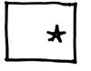
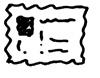
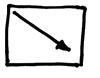
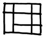

Webサイトを開発する準備ができたら、開発したサイトがユーザーに最高のユーザーエクスペリエンスを提供できることを望んでいるはずです。 Webサイトを正確かつ迅速に評価することは芸術であり、科学でもありますが、この芸術や科学はすぐに学ぶことができます。 ここでは、30秒以内で自分のWebページを評価し、霧を晴らして、Webページのどの部分のデザインが優れていて、どの部分が不十分かを明確にするための、いくつかの簡単なテクニックを紹介します。

視線の最初の着地点に注意する– Webサイトを開きますが、完全に読み込まれるまでは目を開けないでください。 そして、目を開けたとき、最初に見えるものは何ですか？ それはすぐにこのWebページが何に関するものかを教えてくれましたか？ それとも、内容を理解するためにさらに数分の閲覧が必要でしたか？

目を細めて見る– 画面に向かってゆっくりと目を閉じますが、完全には閉じません。ページの内容は徐々にぼやけていきます。 目の視点の移動の軌跡に注意し、現在の脳の活動に注意してください。脳は捉えた限られた情報に基づいて直感的な反応をしようとしています。 ページの各領域の間に変化に気づきましたか？ 脳はページの各領域を比較しており、目は本能的に領域間のコントラストが最もはっきりしている部分を捉えています。

対角線に沿って左上から右下へページ全体をスキャンする– これは目の無意識の読み方向です（もちろん、文化や習慣によってはこの逆の場合もあります）。 人間の脳はこの順序で情報を受け取るため、ページの内容は左上から右下への順序で、明確かつ整理されて表示する必要があります。
「5つのもの」に関するテクニック– Webサイトのホームページに移動し、5秒間閲覧して、覚えているホームページ上の5つのものを言います。 5秒間だけ見て、脳にそのページ上の5つのものを思い出させてください。 できたら、思い出した5つのことと、WebサイトのユーザーがこのWebページで得てほしい情報の上位5つと比較してください。 人間の脳はこの短い時間ではこれだけの情報しか認識できません。また、ほとんどの閲覧ユーザーはそれ以上ページ内容を見る忍耐力がなく、この時点でリンクをクリックして詳細ページへ進み始めます。 こうしたユーザーの反応は、ページがユーザーにとえるユーザーエクスペリエンスの第一歩です。したがって、この最も注目に値する5つのものに必ず価値を発揮させてください。

交差する線を見つける– ページの各モジュール間の交差する線を見つけ、それらに目を留めるよう努めてください。 目が無意識に画面上で最も重要な部分に落ちていませんか？ 優れたWebデザインは、最短時間（通常は数秒）で最も多くの情報を収集できる領域へ、巧みにあなたの視線を引き付けることができます。
批判的な目でWebサイトを評価することを学ぶことは、磨くべき重要なスキルです。ユーザーの視点で問題を見ることが必要であり、この役割の切り替えがうまくできるほど、より良いユーザーエクスペリエンスの方法を見つけられます。
あまりにも多くの企業が、Webサイトの特定の詳細について議論することに多くの時間を浪費し、より重要な前提作業を無視しています。これはユーザーを、最終的には会社のビジネスを不利な状況に置くことになります。なぜなら、この「より重要な前提」とは、ユーザーがあなたのサービスやWebサイトに対して何を感じるのか、ということだからです。
あなたのWebサイトを見て、30秒かけて、これらのテクニックで評価してみてください。結局のところ、これらは主要な潜在ユーザーがあなたのURLを入力した後に行うことです。たとえ彼らがそのような考え方や閲覧習慣を持っていることを意識していなくてもです。
出典：http://www.vaikan.com/critique-a-web-page-in-30-seconds-or-less/
クリックしてノートを共有
ノートは本記事の内容の拡張である必要があります！
記事の投稿は、ここをクリックしてください
登録招待コードの取得方法
ノートを共有する前にログインが必要です！
登録招待コードの取得方法